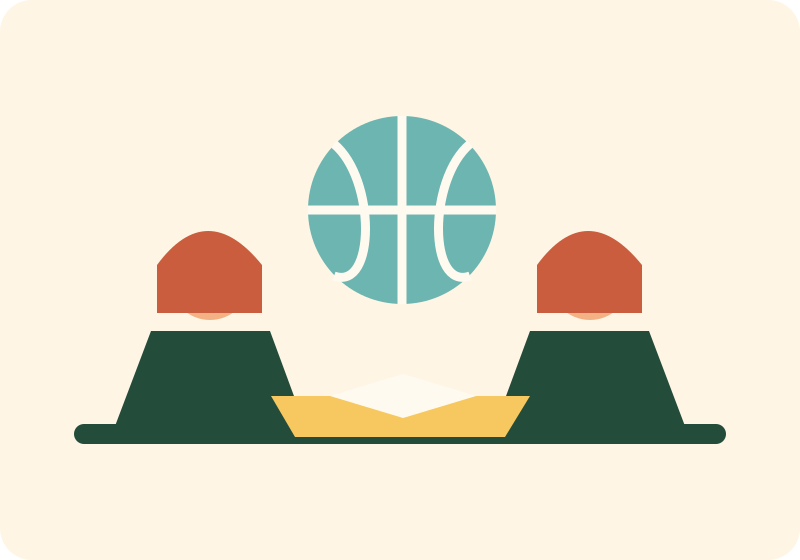

🧩
Primary years
Playful, structured learning builds strong literacy, numeracy and social foundations through stories, movement and exploration.
A well-rounded curriculum builds confident readers, clear thinkers, capable creators and compassionate citizens.
Playful, structured learning builds strong literacy, numeracy and social foundations through stories, movement and exploration.
Deeper subject knowledge meets collaborative projects, laboratory inquiry and growing independence.
Focused academic pathways, career guidance and authentic leadership experiences prepare students for their next chapter.

From coding and robotics to debate, visual arts, sport and service, students develop the skills that matter in a changing world.
Book a visit to meet our educators and explore our classrooms.
Book a school visit